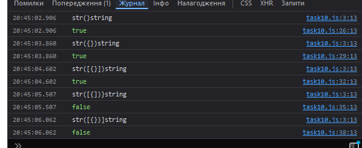

Завдання №6.10
HTML-код (task10.html)
<!DOCTYPE html> <html lang="en"> <head> <meta charset="UTF-8"> <meta name="viewport" content="width=device-width, initial-scale=1.0"> <title>= Task 10 =</title> <link rel="stylesheet" href="../style1.css"> </head> <body> <header></header> <main> <div class="button-container"> <h1>= Завдання №10 =</h1> <input type="button" class="button" onclick="window.location.href='../index.html'" value="На початкову сторінку"> <!-- Викликаємо відповідні JS-сценарії при натисканні кнопок --> <input type="button" class="button" onclick="callFunction1()" value="Виклик = 1 ="> <input type="button" class="button" onclick="callFunction2()" value="Виклик = 2 ="> <input type="button" class="button" onclick="callFunction3()" value="Виклик = 3 ="> <input type="button" class="button" onclick="callFunction4()" value="Виклик = 4 ="> <input type="button" class="button" onclick="callFunction5()" value="Виклик = 5 ="> </div> </main> <footer></footer> <script src="../tasks_js/task10.js"></script> </body> </html>
JS-код (task10.js)
// Функція для перевірки правильності закриття дужок у рядку function checkBrackets(str) { console.log(str); const stack = []; // створимо масив(стек) для зберігання відкритих дужок const openBrackets = '({['; const closeBrackets = ')}]'; for (let i = 0; i < str.length; i++) { // ітеруємося по кожному символу рядка const char = str[i]; if (openBrackets.includes(char)) { // якщо символ є відкритою дужкою, додаємо його в стек stack.push(char); } else if (closeBrackets.includes(char)) { // якщо символ є закритою дужкою, видаляємо останню відкриту дужку зі стека const lastOpenBracket = stack.pop(); // перевіряємо, чи відповідає остання відкрита дужка поточній закритій if (openBrackets.indexOf(lastOpenBracket) !== closeBrackets.indexOf(char)) { return false; } } } // якщо масив(стек) порожній після проходження всього рядка, всі дужки правильно паруються return stack.length === 0; } // Функції з різними вхідними рядками для перевірки function callFunction1() { console.log(checkBrackets('str()string')); } function callFunction2() { console.log(checkBrackets('str({})string')); } function callFunction3() { console.log(checkBrackets('str([{}])string')); } function callFunction4() { console.log(checkBrackets('str([{])}string')); } function callFunction5() { console.log(checkBrackets('str([{})]string')); }
Результат виконання
Коментар до JS-коду
Функція checkBrackets(str) перевіряє правильність закриття різних типів дужок у рядку JavaScript коду (круглих (), фігурних {} і квадратних []). Вона використовує стек, щоб відстежувати відкриті дужки. Коли зустрічається відкрита дужка, вона додається в стек. Коли зустрічається закрита дужка, функція перевіряє, чи відповідає вона останній відкритій дужці (якщо це так, то остання відкрита дужка видаляється зі стека). Якщо парна дужка не відповідає або залишаються непарні відкриті дужки, функція повертає false. Якщо всі дужки правильно закриті, функція повертає true.